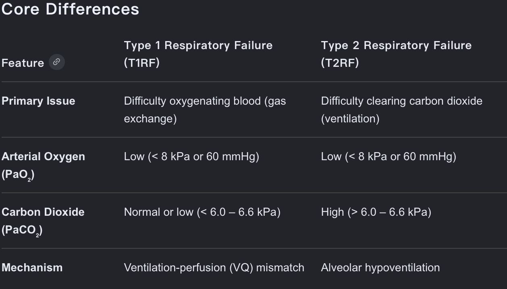
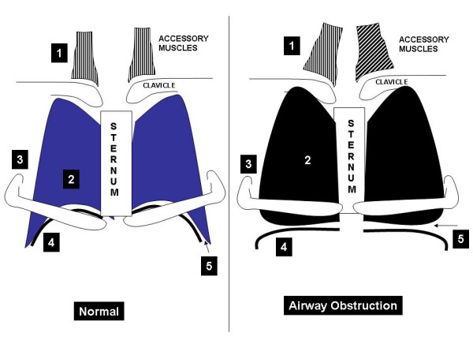

📋Explanations:
1. Investigation Options
1) Check Troponin I Level ➔ Indicated
*
The Rationale: Acute exacerbations of COPD (AECOPD) and cardiovascular events frequently mimic or trigger one another. Mr. Chan is a 68-year-old chronic smoker with hypertension—putting him at high risk for coronary artery disease.
* Measuring cardiac Troponin I in patients with COAD AE is crucial to assess underlying heart strain, identify a heart attack, and predict risk of severe complications and mortality.
* Elevated cardiac troponin I levels were observed in 55.7% of patients. A significant correlation was found between elevated cardiac troponin I levels and COPD severity (P < .01), increased need for ventilator support (74.6% vs. 36.2%; P < .01) and prolonged hospitalisation (7.47 vs. 5.75 days; P < .01). [1]
*
Clinical Pearl for Staff An acute myocardial infarction (MI) can present purely as worsening dyspnoea (a "cardiac equivalent") without classic chest pain. Checking Troponin I is essential to rule out a concurrent cardiac event driving his respiratory distress.
2) Comprehensive Chest Auscultation ➔ Indicated
*
The Rationale: This is a fundamental, non-invasive bedside tool to locate secretion retention and assess airflow. While the admission note highlights general "rhonchi," a detailed regional auscultation helps the physiotherapist map exactly where the secretions are densest (likely the lower zones matching the CXR haziness).
* Rhonchi is low-pitched, continuous, snoring, gurgling, or rattling sound. Rhonchi is caused by blockage in the larger airways (bronchi) caused by thick mucus, fluid, or airway inflammation.
*
Clinical Pearl for Staff: This serves as a direct baseline to guide treatment (e.g., positioning for airway clearance) and immediately evaluate the effectiveness of your intervention post-treatment.
3) 6-Minute Walk Test (6MWT) ➔ Not Indicated
*
The Rationale: The 6MWT is a submaximal exercise test used to assess functional capacity in stable chronic lung disease or during discharge planning. Mr. Chan is currently in acute respiratory distress (RR 24, SOB++ lying in bed) and highly febrile (39.4°C).
*
Clinical Pearl for Staff: Performing a walking test right now is strictly contraindicated. It places an unsafe metabolic and ventilatory demand on a failing system, risking acute desaturation, respiratory exhaustion, or cardiovascular collapse.
4) Check Latest ABG ➔ Indicated
*
The Rationale: Mr. Chan has severe underlying lung disease (GOLD Stage 3) and is showing signs of high work of breathing. He is a prime candidate for Type II respiratory failure (hypercapnia and respiratory acidosis).
* ABG result shows T1RF. This is caused by Ventilation-perfusion (VQ) mismatch. Whilst V/Q mismatch, shunts and diffusion limitation cause hypoxaemia they may also feature hypercapnia if the disease process is severe enough. Hypercapnia (+/- hypoxaemia) normally results from reduced alveolar ventilation or increased alveolar dead space.
* Here is the comparison of T1RF vs. T2RF

*
Clinical Pearl for Staff: Pulse oximetry (SpO2 ) only tells us about oxygenation, not ventilation. An Arterial Blood Gas (ABG) is vital to check his PaCO2 and pH levels. This ensures his oxygen therapy (currently 2L) is safe and helps determine if he requires non-invasive ventilation (NIV).
2. Management Options
Option 1) Diaphragmatic Breathing Exercises ➔ Not Indicated
*
The Rationale: In severe hyperinflation (GOLD Stage 3 COPD) during an acute hit, the diaphragm is already mechanically disadvantaged—it is flattened and working at a high metabolic cost. Forcing diaphragmatic breathing during an acute exacerbation can actually increase the work of breathing and accelerate diaphragmatic fatigue.

Fig.1 Diaphragmatic Flattening and Hoover's Sign Mechanics in Severe COPD [2]
*
Clinical Pearl for Staff: Diaphragmatic breathing shall not be taught routinely to moderate-severe COPD patients, as it may cause paradoxical breathing and worsen dyspnoea. [3]
* Instructing relaxed breathing control (pursed-lip breathing and forward-lean sitting) is much more appropriate right now to reduce air trapping and calm his respiratory rate.
Option 2) EMS to Bilateral Quadriceps ➔ Indicated
*
The Rationale: Mr. Chan is confined to bed by severe dyspnoea and a high fever, making early active mobilization impossible. Electrical Muscle Stimulation (EMS) provides a passive metabolic stimulus to the skeletal muscles.
*
Clinical Pearl for Staff: EMS allows us to preserve quadriceps muscle mass and prevent ICU/ward-acquired weakness without increasing his central ventilatory demand or worsening his shortness of breath. It is a perfect bridge during the acute phase.
* EMS (or NMES) is recommended for bedbound, severely impaired patients or those recovering from severe AECOPD who cannot participate in active exercise. It is not recommended for patients capable of regular physical training. [3]
Option 3) Stepping Exercise at Bedside ➔ Not Indicated
*
The Rationale: Similar to the 6MWT, active weight-bearing exercises like bedside stepping require a significant increase in cardiac output and oxygen consumption.
*
Clinical Pearl for Staff: With an acute infection (WCC 19.5, high fever) and severe resting dyspnoea, his respiratory reserve is entirely spent. Energy conservation and airway clearance take absolute priority over active exercise on Day 1.
* Formal physical training is not recommended during uncompensated respiratory failure; only early mobilization is allowed once the patient's condition improves. [3]
Option 4) Prescribe Oscillating PEP (OPEP) Device ➔ Indicated
*
The Rationale: Mr. Chan has clear signs of a productive chest infection: "yellowish green" sputum, rhonchi, and lower zone haziness. An OPEP device (like an Acapella or Flutter) uses positive expiratory pressure to splint open his poorly supported airways, while the acoustic oscillations change the viscoelastic properties of the mucus, shearing it from the airway walls.
*
Clinical Pearl for Staff: OPEP is highly efficient and requires less physical energy from an already exhausted patient compared to aggressive coughing or manual techniques, making it ideal for an acute exacerbation. [3]
Reference:
1. Gupta, N., Chaturvedi, M., Pursnani, N., Verma, R. K., Singh, G. V., K, K., Tripathi, S., & Lendo, H. (2025). A Study to Assess Cardiac Troponin I Levels in Acute Exacerbation of Chronic Obstructive Pulmonary Disease (AECOPD) and Its Correlation with Severity of COPD. Apollo Medicine. https://doi.org/10.1177/09760016251383984
2. Murray and Nadel`s Textbook of Respiratory Medicine Vol. 1. Fourth-ed.. (2005). : Elsevier.
3. The Physiotherapy Management of Patients with Acute Exacerbations of COPD (Version 4.0, HAHO-COC-GL-PHY-001-v04)
Case creator: Mr. Thomas Mak, Mr. Eric Chan